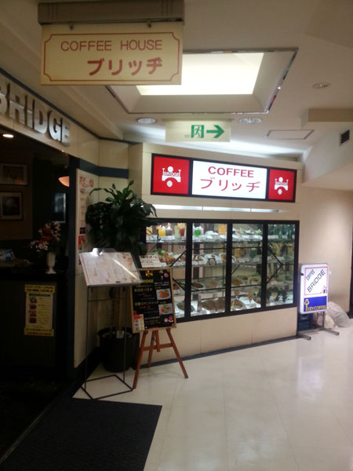
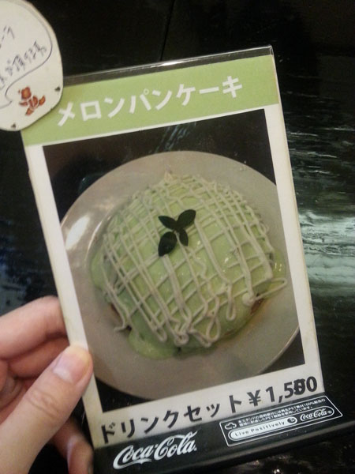
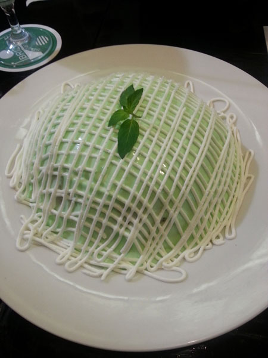
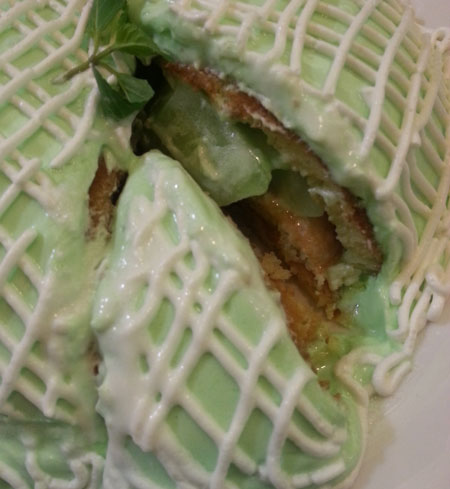
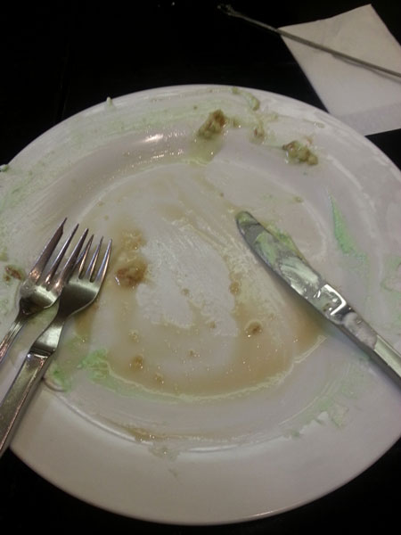
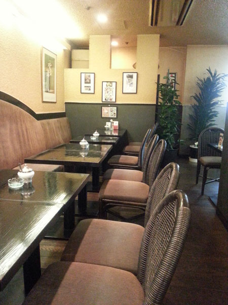
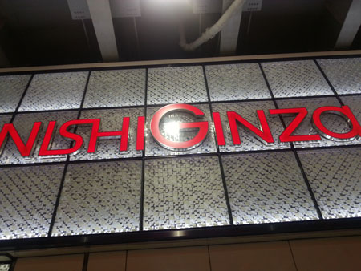

요 카페는 긴자 뱀파이어 카페 찾다가
인터넷 검색으로 우연히 찾았습니당 :D
니시긴자 지하 일층에 있는 커피 브릿지

목표는 멜론 판 케-키
드링크 세트로 (세금포함) 1550엔 입니다

박력만점의 멜론 팬케이크 ㅋㅋㅋ
삼단 팬케이크 층층이 멜론과 중앙에 아이스크림(?)이 있습니다
다짜고자 반으로 자르면 안에들어있는 크림이랑 과일이 다 튀어나와서
엉망진창이 될테니까 케키자르듯 조금씩 삼각형으로 잘라 먹으라고
그러더군욤 ^^***
보기만해도 무진장 달아보이는 비쥬얼인데
생각보다 많이 달지않고 맛있어용
팬케이크 시럽도 같이 나왔는데
자체가 느므느므 달아보이는데 여기에 또 시럽을 얹는단 말야?
싶었지만 의외로 어울립니다 +_+
맛있어요 +_+
양은 3명이서 먹어도 될정도로 크고 알흠답습니다 ㅋㅋㅋ

잘라보면 안에 요래요래 멜론이 숨어 있습니다 :D
마시쏘~~

시럽뿌려서 싹싹 다 먹었어용 ^^;;

가게 자체도 굉장히 오래된 다방스러운(?) 스타일에
특이하게도 전석 흡연가능 입니다
금연석이 따로 없어요
방문할때 사람이 없어서 괜찮았는데
담배연기 민감하신분들은 붐비는 시간대는 조금 힘들듯 :3
*1인 1드링크 주문입니다

검색했을때 '니시긴자 백화점 지하 1층' 이란 글을 보구
긴자 서쪽(니시) 무슨 백화점인지 백화점 이름을 알려줘야할거아냐 ;ㅂ;
라고 생각했건만 그냥 백화점 이름이 '니시긴자' 였어요 ㅋㅋㅋ
역에서 바로 연결되어서 찾아가기 쉽습니다 :)
이나라 스위츠 다 먹을려면 하루 세끼 + 간식을 몽땅 케키로 해결해도
끝이 안날거 같아....OTL
왠 케키가게가 일케 많어;; 그리고 다 맛있어 보여 ㅜㅜ
2009년도 인가 동생곰이 영쿡 놀러오기전 스탑오버로
도쿄 3일동안 혼자 카페여행 하고 왔었는데
다시 후기 살펴보니 이넘 마지막날 하루 카레 사먹은거 빼고는
하루세끼를 정말 케키로 다 해결했어 ㅋㅋㅋㅋ
키 190센티 곰같은 남정네가 하루세끼 케키 기행이라니 ㅋㅋㅋㅋㅋ
무서운 넘 ㅋㅋㅋㅋㅋㅋㅋ
이제 도쿄서 딩가딩가 할날이 한 3주 정도 남았군용 ;3
최고 잘 먹고있는건 도토루에서 하는
오후2시 이후 케키세트 550엔
카보챠 타르트랑 아이스라떼 조합
카보챠 타르트 넘 마시쏘 ㅜㅜ ㅜㅜ